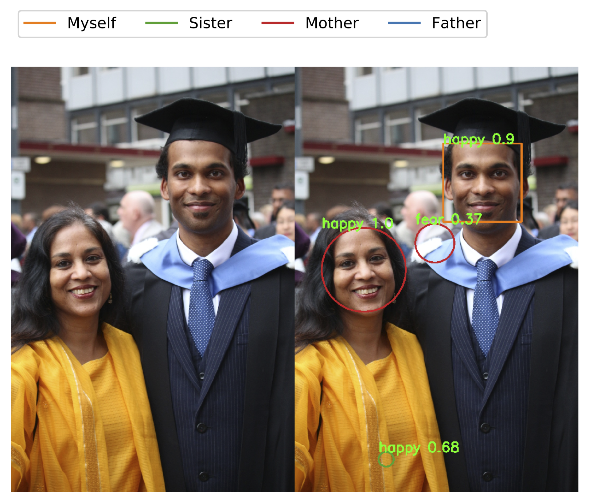

Facial Information Extraction
2019
Official title: Optimising Facial Information Extraction and Processing using Convolutional Neural Networks
Facial recognition and related technologies have impacted society in fundamental and often unpredictable ways. This thesis aims to provide a critical in-depth review of contemporary machine learning methods and an analysis of facial recognition, gender classification, and emotion detection problems, by implementing and evaluating models capable of solving these three tasks on personally collected data.
We first conduct an extensive literature review of the current techniques in use for solving such problems, define the scope and aims of this project, before evaluating the key data collection and pre-processing methodologies.
We then build multiple neural networks classes capable of training different types of models to solve all these tasks, and iteratively experiment with different architectures and methodologies to analyse and identify the param- eters that are most optimal for extracting and processing facial information.
We train, tune, and compare the various models for each task, using built-in evaluative metrics. The subsequent results are analysed to determine the most efficient and optimal models for each task.
We then synthesise all the trained and most promising models into a single end-to-end prototype, capable of seamlessly executing all three tasks simul- taneously. We then challenge the potential of this project by implementing a final model capable of processing real-time input data from a live web-cam.
Finally, the results of the project are evaluated in relation to its originally stated goals, and the strengths and weaknesses are discussed. A detailed roadmap of options for future work and further optimisation is then pre- sented, before concluding with the overall learning points.
- Facial Recognition
- Gender Classification
- Emotion Detection
- End-to-End
- Real-Time
- Utility Scripts
